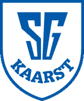

SG Kaarst 1912/35 · VolleyballAufwärmprogramm von Nabil Nmyes
Aufwärmen in Reels
33Übungen
16–18Minuten
3Phasen
Was wir vorhaben: Vor jedem Training, Spiel und jeder Leistungsdiagnostik wärmt sich die gesamte Trainingsgruppe nach einem festen Ablauf auf. Alle Übungen laufen an den Seitenlinien oder im Kreis und brauchen kein Zusatzmaterial (optional Volleybälle bei den Ausfallschritten mit Rumpfrotation und beim Beine kippen).
Wozu: Das Programm bereitet Körper und Nervensystem schrittweise auf maximale Belastungen vor: Herz-Kreislauf hochfahren, Gelenke und Rumpf beweglich machen, dann Sprungkraft und Schnelligkeit aktivieren. Das senkt das Verletzungsrisiko, besonders an Sprunggelenk, Oberschenkelrückseite und Schulter. Weil alle denselben Ablauf durchlaufen, sind die Bedingungen bei Leistungstests vergleichbar.
Ablauf · tippen zum Springen
0 Min.danach 2–3 Min. Pause≈ 16 Min.